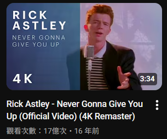
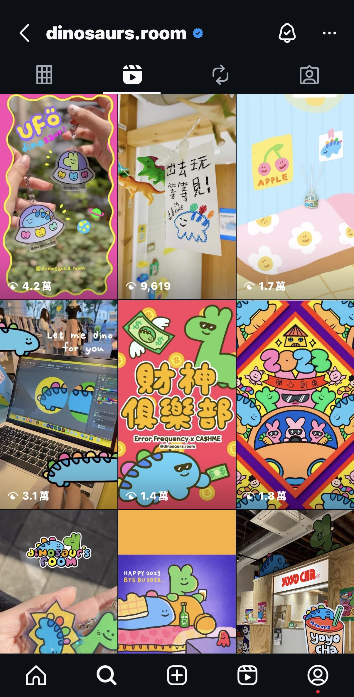
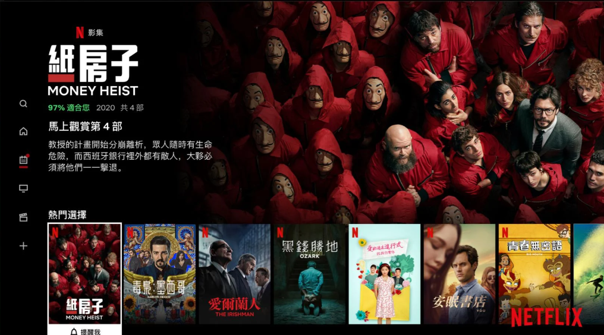
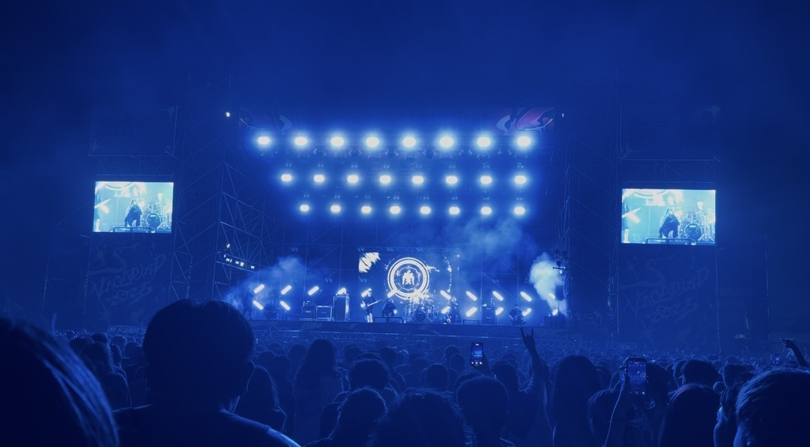

跟科系較相關的興趣
會從平面的廣告設計跳轉選擇多媒體
其中一部份也是因為發覺自己對動態影像和遊戲產生興趣。
雖然沒有到真的非常狂熱，但至少是會想主動接觸的相關事物。
因此我將其中一個頁面拿來記錄
想看看到底是哪些東西讓自己走上這條爆肝不歸路的==
大致分成兩大類的話是這兩種
「Motion Graphics是利用影片素材和動畫科技創造動態的感受，重視影像和聲音節奏的搭配，每+刻視覺都在動的狀態」---維基百科
其概括大多數但不限於:各種動畫、電影、廣告、VFS、舞台背景、軟體視覺、等等...諸多常見的項目
相信一定還有更多我沒提到的。
相較於靜態圖像，人的視覺對動態本身就更加靈敏，因此很多動態或是超出平面以外的事物更令我覺得新鮮有趣。
我個人最常接觸的莫過於Youtube上的影片、IG的Reels、各種串流平台上的動畫或影視作品。

  
youtube影片 IG reels netflix
還有另一個特別的是舞台背景動畫視覺 看過就讓人非常印象深刻
因為會跑一些音樂祭舞台聽團的關係，有幸見識到很多不同風格的舞台 但每次都還是能被不同風格強烈的視覺震撼到。
巨大的電子背板非常重要 它的存在是能讓人在遠遠的就能注意到 並且知道現在舞台上的重點是甚麼
可能是現在的表演者特寫、歌詞切換，或是符合歌曲的動態影像
跟表演的音樂風格一樣 簡單的畫面傳達的意念也各不相同
不管是輕鬆愉快的、情緒強烈的、或是單純有趣的
動態影像都能清楚的交代一切。

台灣金屬樂團-「血肉果汁機」舞台實拍
我平時也很喜歡看遊戲相關的實況
高中時特別對恐怖類型的遊戲情有獨鍾，例如經典的 :
《Five Nights at Freddy's 佛萊迪餐館之五夜驚魂》
遊戲玩法與角色設定也很有趣，就算放到現在都很精采!
衍生作品與二創也非常豐富，官方近年來也有將主線改編翻拍成電影
這邊就放一首經典的同人創作歌曲結尾(同時也是電影第一部ed!好看)

《SILENT HILL f》沉默之丘 f
是近期接觸到喜歡的作品中信樣最深刻的
剛發行便引發轟動，今年底最受玩家熱議的恐怖遊戲也不為過
這一代的故事背景是復古的60年代日本，且首此以高中生少女為主角
以當時傳統女性受社會背景與青春期的種種心境改變圍繞主軸，而這一代也跟歷代傳統一樣
主角都患有某些精神疾病讓遊戲在玩家視角更加詭異。
我很喜歡這種恐怖荒廢又帶有復古詭橘的美感，美術設計真的非常用心
女主的性格能力與動機也能讓人產生好感 最重要的是人物與怪物的建模與外型都很優秀
雖然不敢玩 但還是很期待能看到喜歡的ytb玩出各種結局拼湊主線。
 《SILENT HILL f》 steam 連結
《SILENT HILL f》 steam 連結
《Vtuber-Mori Calliope》
最後還有一個特別想提的 是近年來非常流行的Virtual YouTuber
虛擬實況主 簡稱Vtuber!
其中我個人最喜歡的是日本企業勢 hololive 旗下EN組一期生的死神
《Mori Calliope》
一個會自己編曲寫歌做音樂的饒舌歌手 表面是帥氣幹練但本質也很可愛遜砲充滿反差的類型
第一次接觸到vtb就這樣被收割了!